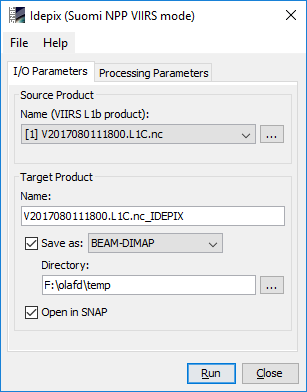
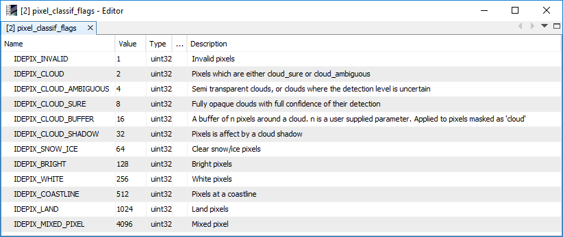
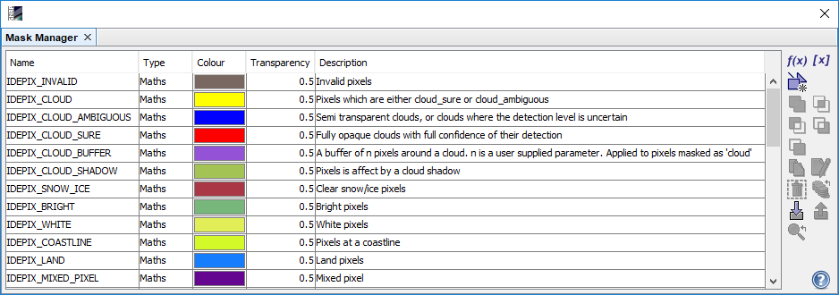

| SNAP Data Processors - Idepix Suomi NPP VIIRS Processor Description |
|

Name: Used to select the spectral source product. The source product shall contain spectral bands providing a source spectrum at each pixel. Use the ... button to open a data product currently not opened in the Sentinel Toolbox.
Name: Used to specify the name of the target product.
Save to: Used to specify whether the target product should be saved to the file system. The combo box presents a list of file formats.
Open in SNAP: Used to specify whether the target product should be opened in the Sentinel Toolbox. When the target product is not saved, it is opened in the Sentinel Toolbox automatically.
Write TOA reflectances to the target product:
If set, all TOA reflectance bands from the source product are written to target product. The default value is 'true'.
Width of cloud buffer (# of pixels):
If a cloud buffer is computed, the buffer width (in # of pixels around the cloudy reference pixel) can be specified.
The default value is '1'.
Resolution of used land-water mask in m/pixel:
The resolution of the underlying SRTM (Shuttle Radar Topography Mission) land-water mask
in metres per pixel. The default value is '50'.

